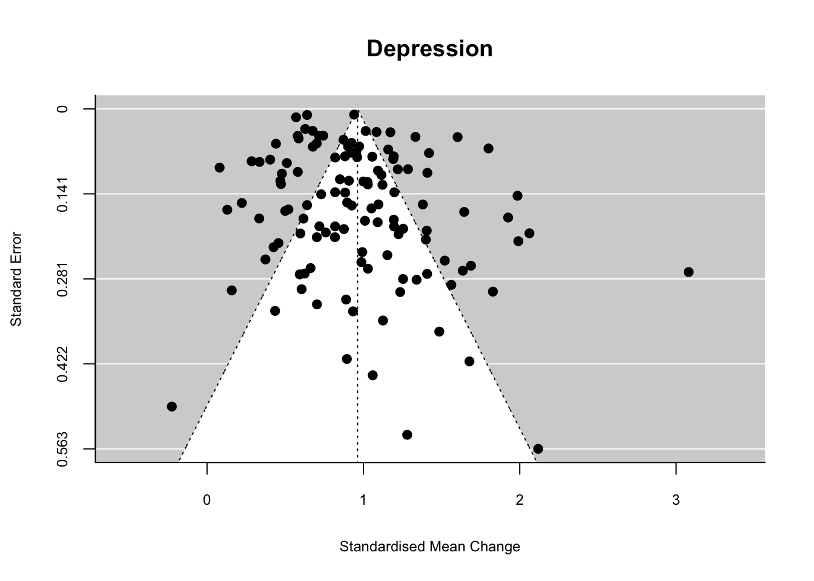
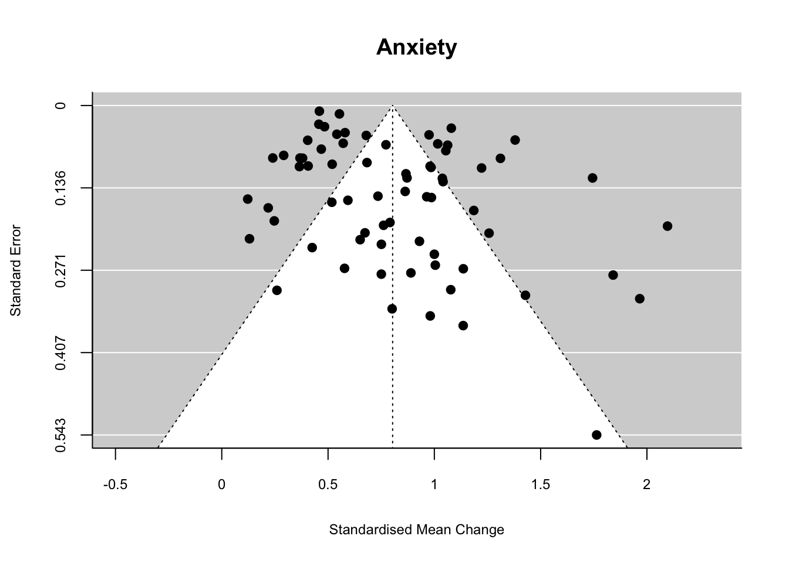
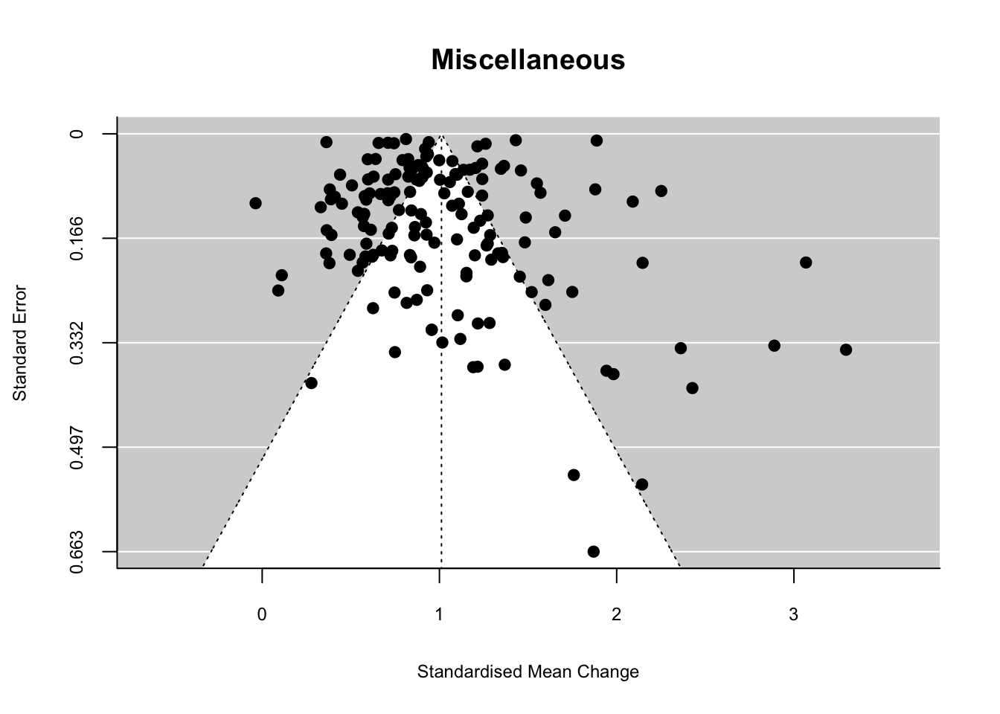
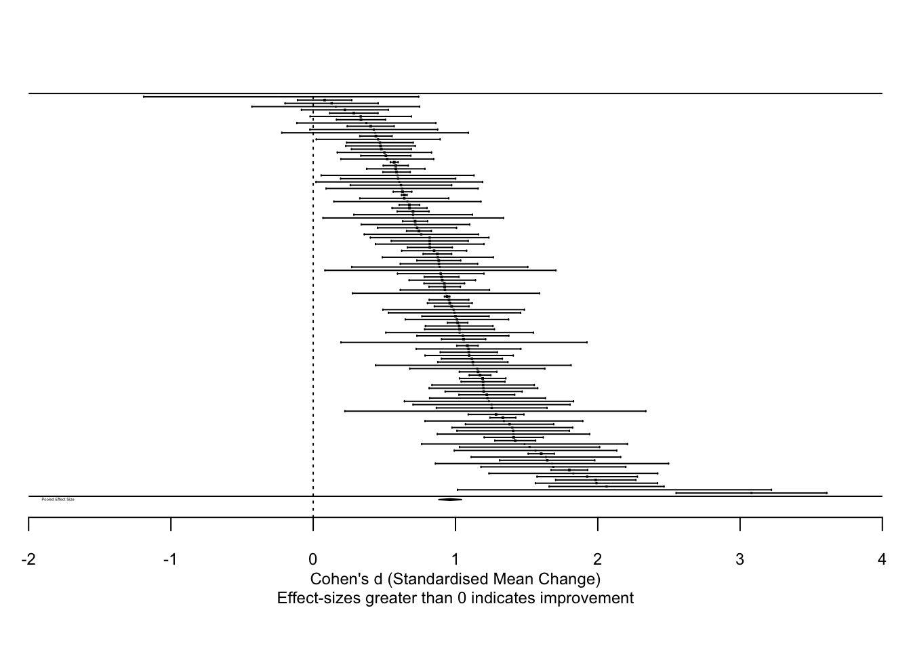
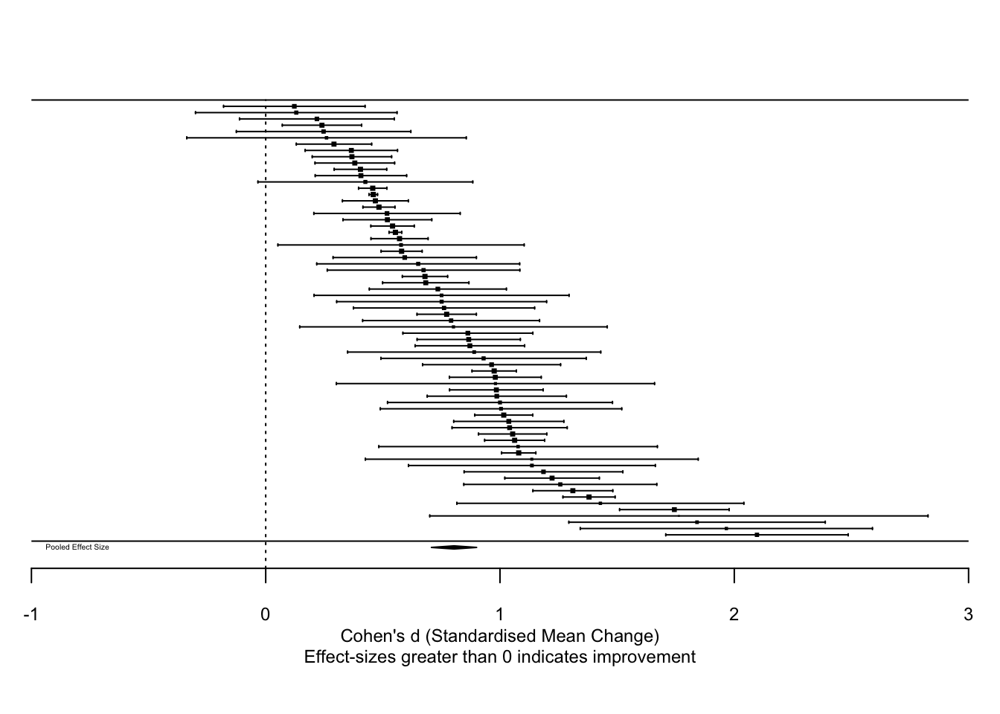
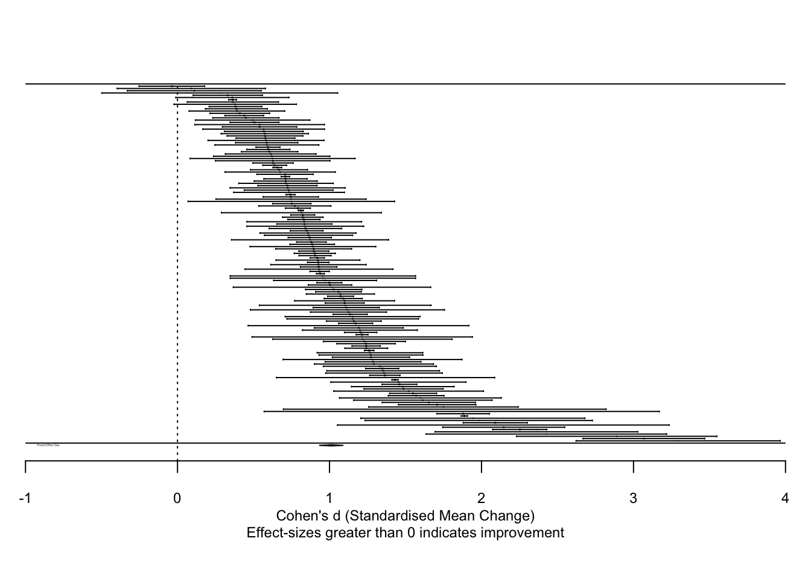

Tables
| criteria | inclusion | exclusion |
|---|---|---|
| Population | Sample exclusively aged 16 and above (lower end of sample age range is at least 16). | Adolescent/child samples with a lower age limit below 16. |
| Intervention | Psychological intervention which includes individual face-to-face psycholgoical therapy (i.e. at least one session). | Samples which indicate that any proportion of patients did not recieve at least one session of individual psychological therapy. |
| Comparator | Studies with pre and post intervention time points. Post intervention defined here as up to six months following treatment. |
|
| Outcome | Psychological treatment effectiveness using a validated self-report measurement tool. | Service/settings which do not use a self-report measure of psychological effectiveness. Clinician reported measures were not included in this review. |
| Setting | Services for which a patient could expect to access psychological therapy (i.e. routine services). | Service/settings that strongly do not appear naturalistic or reflect routine practice. |
| Design |
|
|
| Moderator | Level | Description |
|---|---|---|
| Setting | Outpatient | Sample of patients treated at an out-patient settings. |
| Inpatient | Sample of patients treated at either an (i) inpatient; (ii) day hospital; (iii) residential; or (iv) partial hospital setting. | |
| Completion | Completer | Sample of patients who all completed treatment. |
| Includes Lost to Follow Up | Sample of patients who used intention-to-treat principles. This is either (i) true ITT; or (ii) modified ITT (i.e. a minimum number of attended sessions). | |
| Sector | University Clinics | Sample of patients seen at (i) University training clinics; or (ii) University based out-patient clinics. |
| Primary | Sample of patients seen at a: (i) primary care; (ii) health; (iii) counselling/University counselling; (iv) voluntary ; (v) private [independent or group]; or (vi) employee assistential/occupational health service. | |
| Secondary | Sample of patients seen at a: (i) secondary care; (ii) CMHTs /CMHC; (iii) tertiary/specialised psychotherapy; (iv) behavioural health/managed care ; or (v) Intensive out-patient setting. | |
| Inpatient | Sample of patients treated at either an (i) inpatient; (ii) day hospital; (iii) residential; or (iv) partial hospital setting. | |
| Continent | Continents | Continent of study setting, consisting of either: (i) UK; (ii) mainland Europe; (iii) North America; (iv) Asia; (v) Australasia. |
| Therapy | Dynamic | Therapy or counselling which follows a psychodynamic orientation. |
| CBT | Therapy or counselling which follows a cognitive and/or behavioural orientation. | |
| Counselling | Counselling which is either (i) person-centered; or (ii) orientation not specified. | |
| Other | Therapy or counselling which (i) has not been mentioned above, or (ii) is not specified/reported in the study manuscript. | |
| Trainee | Unqualified | Interventions exclusively made up of psychology trainees. |
| Other | All other samples/studies. | |
| Treatment Development Stage | Preliminary Studies | Methodologies including: (i) pilot or (ii) preliminary effectiveness studies. |
| Routine Evaluations | Methodologies including: (i) service evaluatons; (ii) benchmarking; (iii) routine outcome reporting; (iv) predictors of outcome/drop-out. |
| Steps | Scenario | Response |
|---|---|---|
| Step 1 | Manuscript reports all required information (N, M1, M2, SD1) for preferred d. | Calculate preferred d. |
| Step 2 | Manuscript reports all information apart from Pearson’s r. | E-mail corresponding authors to request r. |
| Step 3 | Manuscript does not report the mean or standard deviation but reports paired samples d. | Use the reported d within the manuscript. |
| Step 4 | Manuscript does not report mean, standard deviation, or paired samples d however reports alternative metrics (e.g. median, range, standard error, ANOVA, regression | Estimate the meand and standard deviation by converting available metrics. |
| Step 5 | All above steps attempted without success | Study is not included in meta-analysis but is retained for narrative synthesis. |
| Decision | phase.1 | phase.2 | phase.3 | Total |
|---|---|---|---|---|
| Exclude | 174 | 111 | 54 | 339 |
| Include | 130 | 79 | 43 | 252 |
| No Access | 21 | 7 | 0 | 28 |
| Total | 325 | 197 | 97 | 619 |
| Note. Difinitions for different phases are as follows: Phase 1 = studies identified through the electonic database search. Phase 2 = studies identified through phase 1 reference lists and citation searching. Phase 3 = grey literature and studies provided by authors contacted during the study. |
| Level | University | Mild | Moderate | Severe | Other | Total | |
|---|---|---|---|---|---|---|---|
| N | n | 9195.000 | 158150.000 | 9515.000 | 22586.000 | 33694.000 | 233140.00000 |
| samples | 58.000 | 88.000 | 32.000 | 92.000 | 8.000 | 278.00000 | |
| mean | 158.534 | 1797.159 | 297.344 | 245.500 | 4211.750 | 838.63309 | |
| median | 93.500 | 121.000 | 61.000 | 63.000 | 93.000 | 81.50000 | |
| iqr | 162.500 | 935.000 | 347.000 | 107.500 | 1999.750 | 224.50000 | |
| Females | n | 5350.000 | 95373.000 | 5797.000 | 14952.000 | 22801.000 | 144273.00000 |
| Age | samples | 65.000 | 77.000 | 29.000 | 82.000 | 7.000 | 260.00000 |
| mean | 33.781 | 36.525 | 34.802 | 35.545 | 36.237 | 35.33012 | |
| min | 20.500 | 19.000 | 24.300 | 21.520 | 24.520 | 19.00000 | |
| max | 52.290 | 60.500 | 47.490 | 52.000 | 46.100 | 60.50000 | |
| Sessions | samples | 54.000 | 64.000 | 4.000 | 54.000 | 6.000 | 182.00000 |
| mean | 21.005 | 11.260 | 13.750 | 14.668 | 8.553 | 15.12771 | |
| min | 2.150 | 4.000 | 9.000 | 1.000 | 8.000 | 1.00000 | |
| max | 85.330 | 64.900 | 24.000 | 64.000 | 9.520 | 85.33000 | |
| median | 14.770 | 8.175 | 11.000 | 11.150 | 8.150 | 13.00000 | |
| iqr | 13.550 | 8.600 | 3.750 | 10.400 | 1.200 | 9.97500 | |
| Setting | Mixed | 0.000 | 0.000 | 0.000 | 0.000 | 5.000 | 5.00000 |
| Outpatient | 68.000 | 96.000 | 0.000 | 91.000 | 4.000 | 259.00000 | |
| Residential | 0.000 | 0.000 | 33.000 | 1.000 | 0.000 | 34.00000 | |
| Continent | Asia | 4.000 | 1.000 | 0.000 | 0.000 | 1.000 | 6.00000 |
| Australasia | 5.000 | 0.000 | 0.000 | 5.000 | 0.000 | 10.00000 | |
| Europe | 20.000 | 13.000 | 15.000 | 14.000 | 1.000 | 63.00000 | |
| N.America | 38.000 | 32.000 | 10.000 | 39.000 | 4.000 | 123.00000 | |
| UK | 1.000 | 50.000 | 8.000 | 34.000 | 3.000 | 96.00000 | |
| Completion | ITT | 48.000 | 48.000 | 16.000 | 53.000 | 4.000 | 169.00000 |
| Completers | 19.000 | 45.000 | 16.000 | 35.000 | 3.000 | 118.00000 | |
| NA | 0.000 | 1.000 | 0.000 | 0.000 | 1.000 | 2.00000 | |
| Therapy | CBT | 43.000 | 41.000 | 14.000 | 49.000 | 5.000 | 152.00000 |
| Counselling | 0.000 | 22.000 | 0.000 | 3.000 | 0.000 | 25.00000 | |
| Dynamic | 12.000 | 9.000 | 13.000 | 16.000 | 0.000 | 50.00000 | |
| Other | 13.000 | 24.000 | 6.000 | 24.000 | 4.000 | 71.00000 | |
| hourglass | Stage-1 | 4.000 | 6.000 | 7.000 | 16.000 | 1.000 | 34.00000 |
| Stage-3 | 64.000 | 90.000 | 26.000 | 76.000 | 8.000 | 264.00000 |
 
| Moderator | Level | k | d | ci | Q | I2 |
|---|---|---|---|---|---|---|
| Random effects model for severity (Q = 0.79, p = 0.853) | ||||||
| severity | mild | 34 | 1.03 | 1.22-0.85 | 9550225.84 | 100.0% |
| university | 30 | 0.98 | 1.16-0.79 | 43207.72 | 100.0% | |
| Secondary | 57 | 0.98 | 1.11-0.86 | 80913.95 | 100.0% | |
| Residential | 15 | 0.91 | 1.12-0.7 | 237284.01 | 100.0% | |
| Random effects model for analysis (Q = 2.93, p = 0.087) | ||||||
| analysis | include | 81 | 0.93 | 1.03-0.84 | 9730935.19 | 100.0% |
| Completers | 59 | 1.08 | 1.22-0.94 | 221034.47 | 100.0% | |
| Random effects model for setting (Q = 0.45, p = 0.503) | ||||||
| setting | Outpatient | 121 | 0.99 | 1.08-0.91 | 9660158.70 | 100.0% |
| Residential | 16 | 0.92 | 1.12-0.72 | 240002.33 | 100.0% | |
| Random effects model for continent (Q = 17.63, p = 0.001*) | ||||||
| continent | N.America | 58 | 1.00 | 1.11-0.88 | 640493.04 | 100.0% |
| UK | 44 | 1.10 | 1.26-0.94 | 3564904.55 | 100.0% | |
| Europe | 29 | 0.95 | 1.12-0.77 | 60424.34 | 100.0% | |
| Australasia | 4 | 0.67 | 1.01-0.33 | 7087.67 | 100.0% | |
| Asia | 5 | 0.59 | 0.8-0.37 | 91.78 | 96.0% | |
| Random effects model for therapy modality (Q = 1.16, p = 0.763) | ||||||
| therapy modality | psychodynamic | 24 | 1.03 | 1.2-0.86 | 41984.43 | 100.0% |
| Counselling | 6 | 0.89 | 1.1-0.69 | 3471906.01 | 100.0% | |
| cognitive-behavioural | 90 | 1.00 | 1.11-0.89 | 393181.50 | 100.0% | |
| Other | 20 | 0.96 | 1.17-0.75 | 307948.08 | 100.0% | |
| Random effects model for treatment development stage (Q = 0.33, p = 0.566) | ||||||
| Tretament stage | routine evaluations | 118 | 1.00 | 1.09-0.91 | 9955258.72 | 100.0% |
| preliminary studies | 22 | 0.95 | 1.12-0.78 | 546.66 | 96.0% | |
| Random effects model for experience (Q = 1.41, p = 0.235) | ||||||
| experience | qualified | 121 | 1.01 | 1.1-0.92 | 9878905.77 | 100.0% |
| trainees | 19 | 0.90 | 1.06-0.74 | 76281.83 | 100.0% | |
| Random effects model for measurement tool (Q = 0, p = 0.956) | ||||||
| measurement tool | BDI | 34 | 1.02 | 1.18-0.86 | 121013.68 | 100.0% |
| PHQ-9 | 30 | 1.01 | 1.22-0.81 | 3495045.61 | 100.0% | |
| Random effects model for sample size (Q = 4.72, p = 0.094) | ||||||
| sample size | large | 74 | 1.02 | 1.13-0.91 | 9949550.00 | 100.0% |
| small | 33 | 0.85 | 0.99-0.7 | 625.88 | 95.0% | |
| medium | 33 | 1.08 | 1.26-0.89 | 5470.21 | 99.0% | |
| Note. Model Outputs in Bold are significant at either * p = <.05. ** Bonferroni adjustment, p = <.007 | ||||||
| Moderator | Level | k | d | ci | Q | I2 |
|---|---|---|---|---|---|---|
| Random effects model for severity (Q = 17.15, p = 0.001*) | ||||||
| severity | mild | 22 | 0.99 | 1.2-0.79 | 334405.48 | 100.0% |
| Secondary | 24 | 0.63 | 0.76-0.5 | 30702.22 | 100.0% | |
| Residential | 8 | 0.59 | 0.9-0.29 | 108223.63 | 100.0% | |
| university | 29 | 1.01 | 1.2-0.83 | 32067.93 | 100.0% | |
| Random effects model for analysis (Q = 1.82, p = 0.178) | ||||||
| analysis | include | 58 | 0.81 | 0.93-0.69 | 517063.05 | 100.0% |
| Completers | 26 | 0.96 | 1.14-0.77 | 92492.19 | 100.0% | |
| Random effects model for setting (Q = 4.34, p = 0.037*) | ||||||
| setting | Outpatient | 75 | 0.89 | 0.99-0.78 | 440122.14 | 100.0% |
| Residential | 9 | 0.58 | 0.85-0.31 | 157933.03 | 100.0% | |
| Random effects model for continent (Q = 15.49, p = 0.004*) | ||||||
| continent | N.America | 32 | 0.91 | 1.1-0.72 | 230641.72 | 100.0% |
| UK | 25 | 0.89 | 1.09-0.7 | 115765.33 | 100.0% | |
| Europe | 20 | 0.79 | 0.93-0.65 | 27960.45 | 100.0% | |
| Australasia | 4 | 0.61 | 1.01-0.21 | 3781.78 | 100.0% | |
| Asia | 3 | 0.59 | 0.68-0.49 | 3.33 | 40.0% | |
| Random effects model for therapy modality (Q = 67.97, p = 0*) | ||||||
| therapy modality | psychodynamic | 12 | 0.90 | 1.04-0.75 | 11879.61 | 100.0% |
| Counselling | 2 | 0.43 | 0.49-0.38 | 28.37 | 96.0% | |
| cognitive-behavioural | 62 | 0.87 | 1-0.74 | 174811.70 | 100.0% | |
| Other | 8 | 0.75 | 0.97-0.53 | 155956.84 | 100.0% | |
| Random effects model for treatment development stage (Q = 0.02, p = 0.885) | ||||||
| Tretament stage | routine evaluations | 74 | 0.85 | 0.96-0.74 | 635244.53 | 100.0% |
| preliminary studies | 10 | 0.87 | 1.14-0.61 | 639.27 | 99.0% | |
| Random effects model for experience (Q = 5.77, p = 0.016*) | ||||||
| experience | qualified | 66 | 0.78 | 0.88-0.68 | 502201.12 | 100.0% |
| trainees | 18 | 1.12 | 1.39-0.86 | 59913.29 | 100.0% | |
| Random effects model for measurement tool (Q = 3.92, p = 0.048*) | ||||||
| measurement tool | BAI | 19 | 0.71 | 0.88-0.54 | 36173.30 | 100.0% |
| GAD-7 | 19 | 0.96 | 1.15-0.78 | 241386.08 | 100.0% | |
| Random effects model for sample size (Q = 0.25, p = 0.885*) | ||||||
| sample size | large | 45 | 0.84 | 0.95-0.72 | 635426.98 | 100.0% |
| medium | 13 | 0.93 | 1.3-0.57 | 2069.64 | 99.0% | |
| small | 26 | 0.84 | 1.03-0.66 | 898.19 | 97.0% | |
| Note. Model Outputs in Bold are significant at either * p = <.05. | ||||||
| Moderator | Level | k | d | ci | Q | I2 |
|---|---|---|---|---|---|---|
| Random effects model for severity (Q = 10.09, p = 0.018*) | ||||||
| severity | mild | 61 | 1.08 | 1.21-0.95 | 39097618.60 | 100.0% |
| Secondary | 62 | 0.98 | 1.12-0.84 | 111313.98 | 100.0% | |
| Residential | 27 | 1.09 | 1.26-0.91 | 66242.24 | 100.0% | |
| university | 28 | 0.82 | 0.95-0.7 | 44711.91 | 100.0% | |
| Random effects model for analysis (Q = 1.8, p = 0.179) | ||||||
| analysis | include | 95 | 0.98 | 1.09-0.87 | 12421993.52 | 100.0% |
| Completers | 89 | 1.08 | 1.18-0.97 | 10540486.30 | 100.0% | |
| Random effects model for setting (Q = 0.75, p = 0.386) | ||||||
| setting | Outpatient | 153 | 1.00 | 1.08-0.92 | 104250384.75 | 100.0% |
| Residential | 28 | 1.08 | 1.25-0.91 | 67693.60 | 100.0% | |
| Random effects model for continent (Q = 13.53, p = 0.009*) | ||||||
| continent | UK | 68 | 1.02 | 1.13-0.92 | 92810921.73 | 100.0% |
| N.America | 60 | 1.07 | 1.25-0.9 | 4606355.34 | 100.0% | |
| Europe | 47 | 1.00 | 1.12-0.88 | 157855.31 | 100.0% | |
| Australasia | 4 | 0.81 | 0.9-0.72 | 330.52 | 99.0% | |
| Asia | 5 | 0.90 | 1.2-0.61 | 575.15 | 99.0% | |
| Random effects model for therapy modality (Q = 13.46, p = 0.004*) | ||||||
| therapy modality | cognitive-behavioural | 83 | 1.18 | 1.32-1.05 | 178432.53 | 100.0% |
| psychodynamic | 36 | 0.93 | 1.07-0.79 | 49292.89 | 100.0% | |
| Counselling | 19 | 0.90 | 1.06-0.75 | 318722.49 | 100.0% | |
| Other | 46 | 0.87 | 0.98-0.76 | 103700450.06 | 100.0% | |
| Random effects model for treatment development stage (Q = 0.08, p = 0.781) | ||||||
| Tretament stage | preliminary studies | 24 | 1.06 | 1.29-0.82 | 4742.50 | 100.0% |
| routine evaluations | 160 | 1.02 | 1.1-0.94 | 104380709.35 | 100.0% | |
| Random effects model for experience (Q = 16.86, p = 0*) | ||||||
| experience | qualified | 158 | 1.07 | 1.16-0.99 | 104283036.81 | 100.0% |
| trainees | 26 | 0.77 | 0.89-0.65 | 71069.62 | 100.0% | |
| Random effects model for measurement tool (Q = 26.99, p = 0*) | ||||||
| measurement tool | BSI-GSI | 26 | 0.87 | 1-0.73 | 9966.85 | 100.0% |
| CORE-OM | 35 | 1.04 | 1.18-0.9 | 72198841.45 | 100.0% | |
| OQ-45 | 13 | 0.57 | 0.74-0.41 | 1090596.15 | 100.0% | |
| SCL (Global) | 22 | 1.05 | 1.23-0.87 | 15779.11 | 100.0% | |
| PCL | 12 | 1.29 | 1.61-0.97 | 3642.32 | 100.0% | |
| Random effects model for sample size (Q = 1.03, p = 0.599*) | ||||||
| sample size | large | 110 | 1.01 | 1.1-0.92 | 104379542.58 | 100.0% |
| medium | 38 | 1.11 | 1.3-0.92 | 4366.03 | 99.0% | |
| small | 36 | 0.99 | 1.18-0.81 | 1001.45 | 97.0% | |
| Note. Model Outputs in Bold are significant at either * p = <.05. | ||||||
| Domain | Moderator | Mean (range) | k | B | CI | SE | Q | QMP | R2 |
|---|---|---|---|---|---|---|---|---|---|
| depression | Year (of publication) | 2012.16 (1988-2020) | 140 | 0.00 | 0.01–0.02 | 0.01 | 0.24 | 0.62 | 0.00 |
| mean age | 36.25 (19-60.5) | 126 | 0.00 | 0.01–0.01 | 0.01 | 0.11 | 0.74 | 0.00 | |
| Sessions (mean) | 15.32 (1-46.5) | 84 | 0.01 | 0.02-0 | 0.01 | 1.54 | 0.22 | 0.47 | |
| ethnicity (% minority) | 0.23 (0-0.66) | 62 | -0.09 | 0.5–0.69 | 0.30 | 0.09 | 0.76 | 0.00 | |
| gender (% female) | 0.67 (0-1) | 132 | 0.00 | 0.4–0.39 | 0.20 | 0.00 | 0.99 | 0.00 | |
| employment (% in full-time | 0.53 (0.05-1) | 46 | 0.31 | 0.97–0.35 | 0.34 | 0.85 | 0.36 | 0.00 | |
| risk of bias (1-10) | 5.62 (1-8) | 140 | 0.04 | 0.09–0.01 | 0.03 | 2.03 | 0.15 | 0.67 | |
| anxiety | Year (of publication) | 2012.93 (1999-2020) | 84 | 0.02 | 0.04-0 | 0.01 | 3.78 | 0.05 | 3.27 |
| mean age | 35.36 (19-60.5) | 79 | 0.00 | 0.01–0.01 | 0.01 | 0.01 | 0.91 | 0.00 | |
| Sessions (mean) | 16 (1-46.5) | 52 | 0.00 | 0.01–0.01 | 0.01 | 0.03 | 0.85 | 0.00 | |
| ethnicity (% minority) | 0.19 (0-0.59) | 40 | 0.31 | 1.62–0.99 | 0.66 | 0.22 | 0.64 | 0.00 | |
| gender (% female) | 0.67 (0.078-1) | 79 | -0.27 | 0.31–0.85 | 0.30 | 0.82 | 0.36 | 0.00 | |
| employment (% in full-time | 0.6 (0.05-1) | 29 | 0.95 | 1.55-0.35 | 0.31 | 9.64 | 0.00 | 24.18 | |
| risk of bias (1-10) | 5.79 (1-8) | 84 | 0.05 | 0.12–0.03 | 0.04 | 1.51 | 0.22 | 0.76 | |
| general | Year (of publication) | 2012.55 (2000-2020) | 184 | 0.00 | 0.02–0.01 | 0.01 | 0.07 | 0.79 | 0.00 |
| mean age | 35.15 (21.8-52.5) | 156 | 0.00 | 0.01–0.01 | 0.01 | 0.01 | 0.93 | 0.00 | |
| Sessions (mean) | 15.5 (1-64.9) | 108 | -0.01 | 0–0.01 | 0.00 | 1.77 | 0.18 | 0.69 | |
| ethnicity (% minority) | 0.26 (0-0.7) | 69 | -0.48 | 0.19–1.15 | 0.34 | 2.00 | 0.16 | 1.20 | |
| gender (% female) | 0.67 (0-1) | 173 | -0.26 | 0.15–0.67 | 0.21 | 1.50 | 0.22 | 0.12 | |
| employment (% in full-time | 0.53 (0-1) | 60 | -0.14 | 0.5–0.78 | 0.33 | 0.18 | 0.67 | 0.00 | |
| risk of bias (1-10) | 5.6 (1-8) | 184 | 0.05 | 0.1-0 | 0.03 | 3.78 | 0.05 | 1.59 | |
| Note. Model Outputs in Bold are significant at either * p = <.05. |